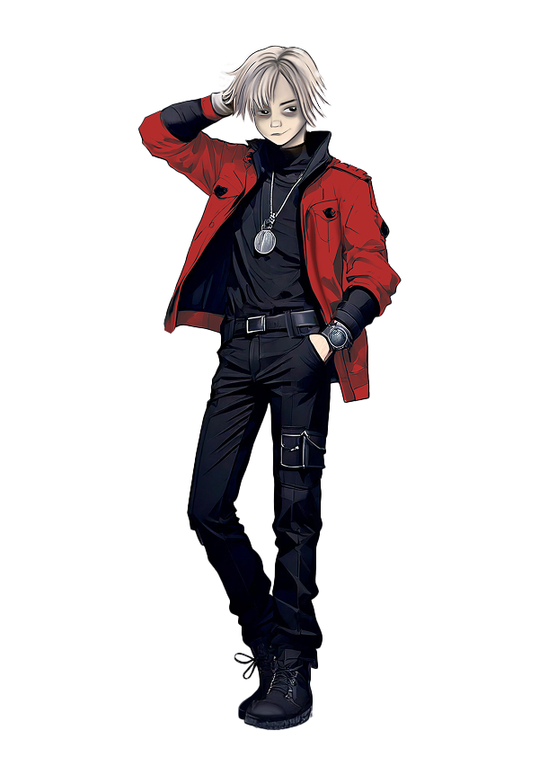

The Characters
The game focuses on five rebel characters and one Gamemaster named Zero, whose goal is to hunt down the rebels and oversee the game. During the game, players carry out missions and engage in battles against each other and against Zero. We chose to give each character their own backstory to help players connect with them on a deeper level. We created the characters ourselves and refined them using generative tools such as Midjourney and Firefly.
